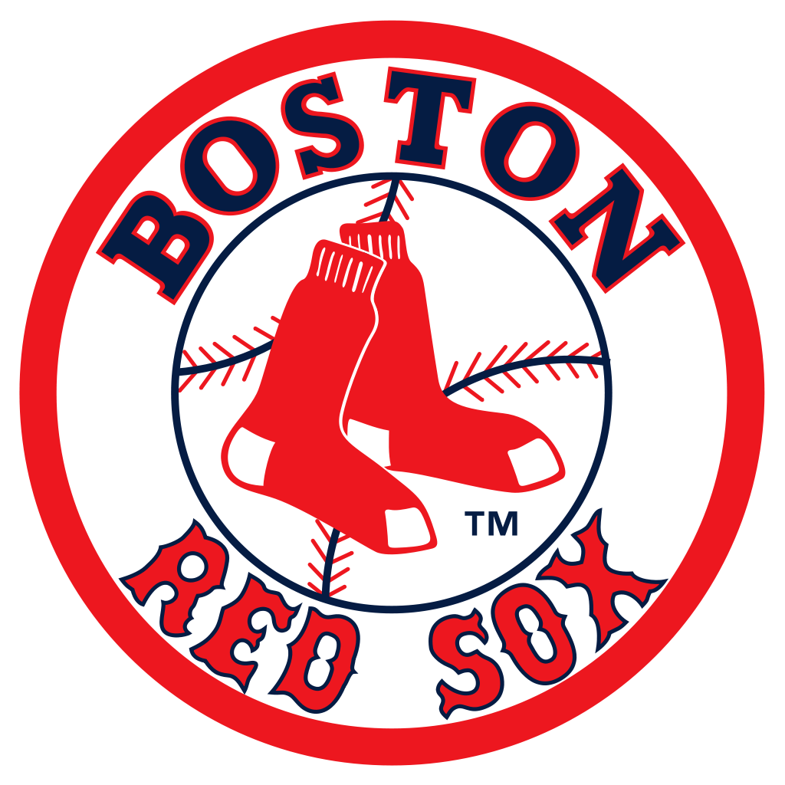

The Major League Baseball postseason is an elimination tournament held after the conclusion of the MLB regular season. The winners of the American League Championship Series (ALCS) and the National League Championship Series (NLCS) play each other in the best-of-seven World Series.
For this project we had to calculate the baseball momentum; ie If your team has momentum in the final game of the World Series it's on a roll. Your players have a positive attitude. And unless things change, it looks like your team is going to win the series. During the 2013 season the Boston Red Sox played against the St. Louis Cardinals. This match was won 4-2 making Boston Red Sox the World Champions. The teams that made it to the playoffs are:
- Boston Red Sox
- St. Louis Cardinals
- Detroit Tigers
- Los Angeles Dodgers
- Tampa Bay Rays
- Oakland Athletics
- Pittsburgh Pirates
- Atlanta Braves
- Cleveland Indians
- Cincinnati Reds
